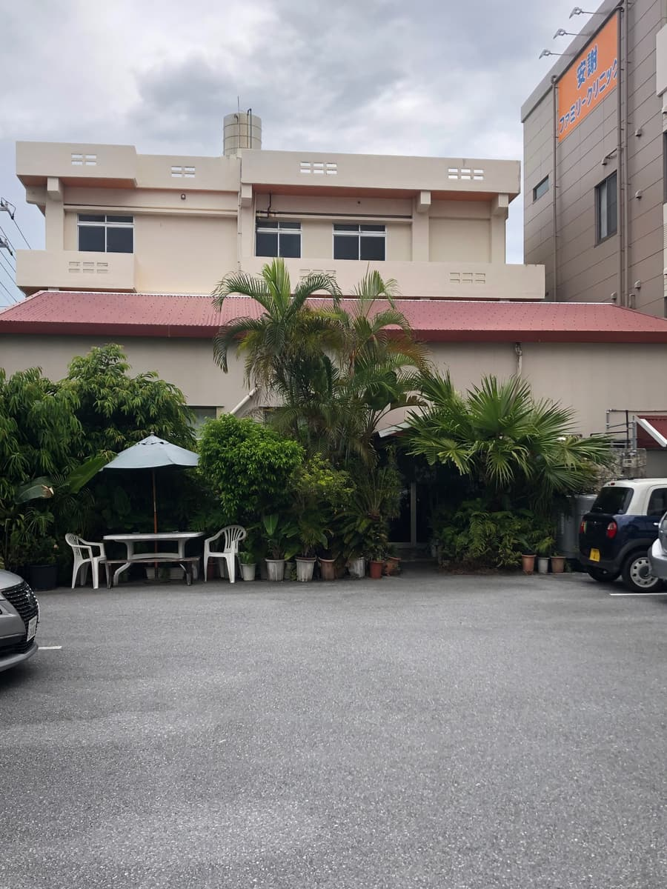
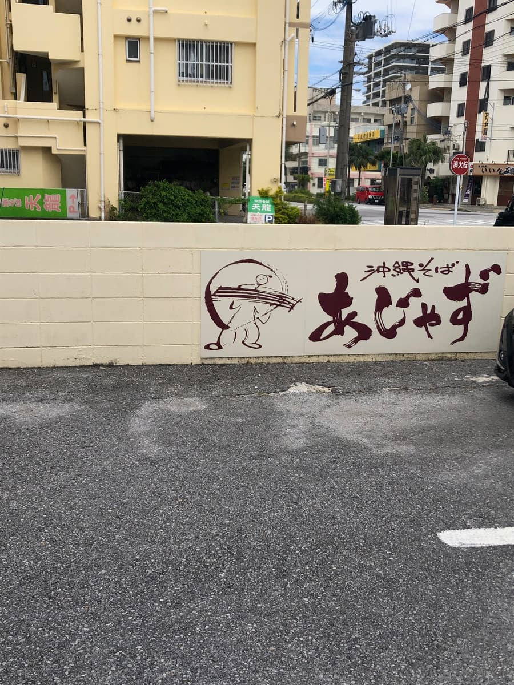
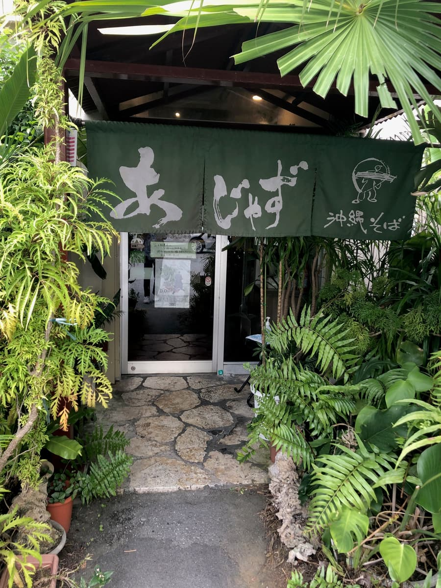
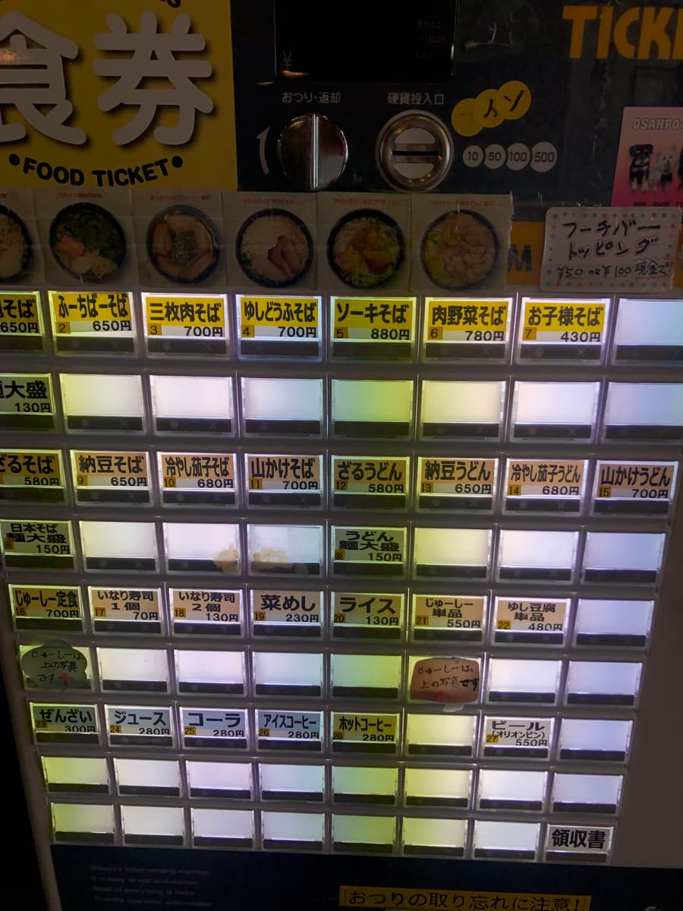
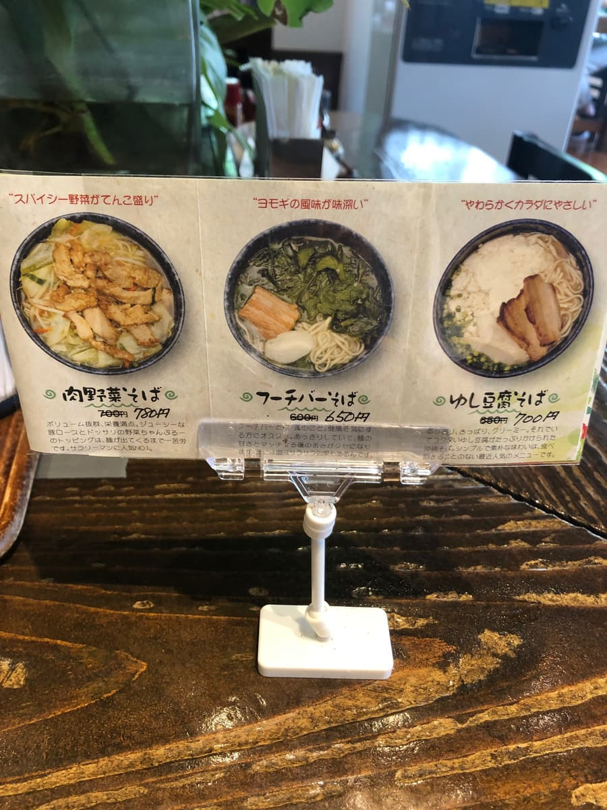
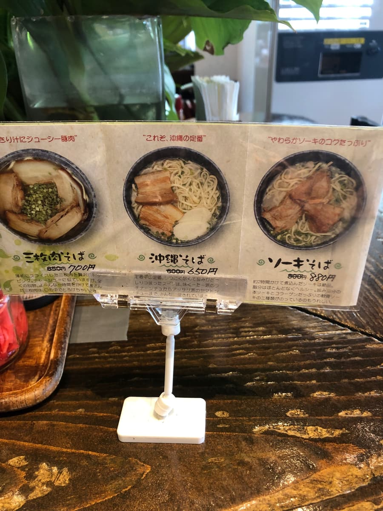
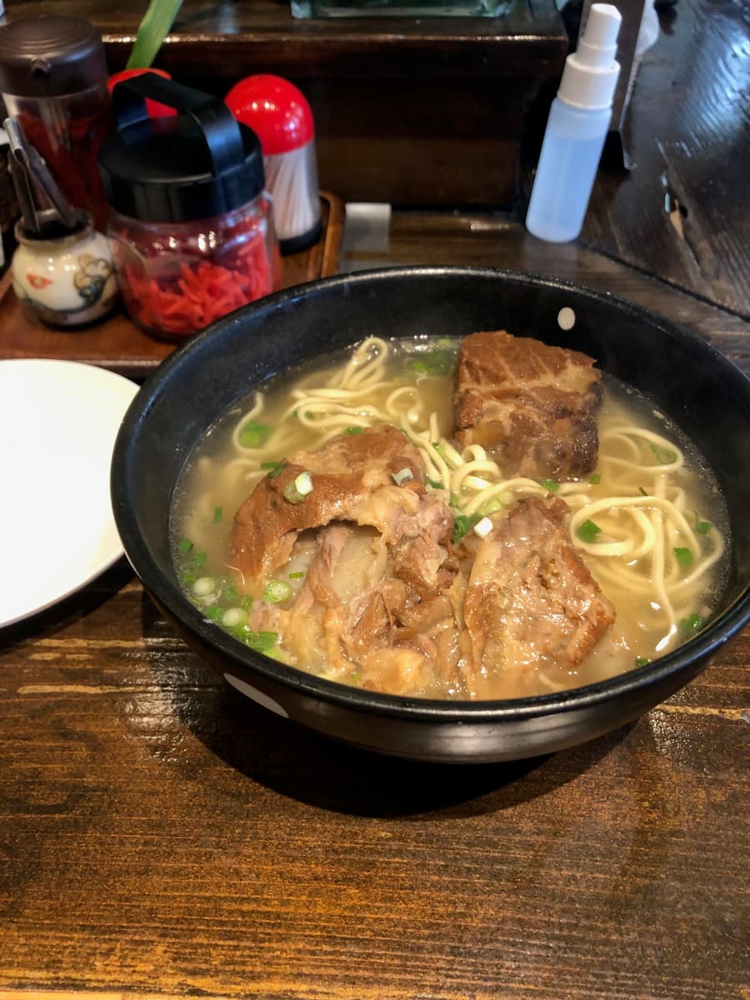
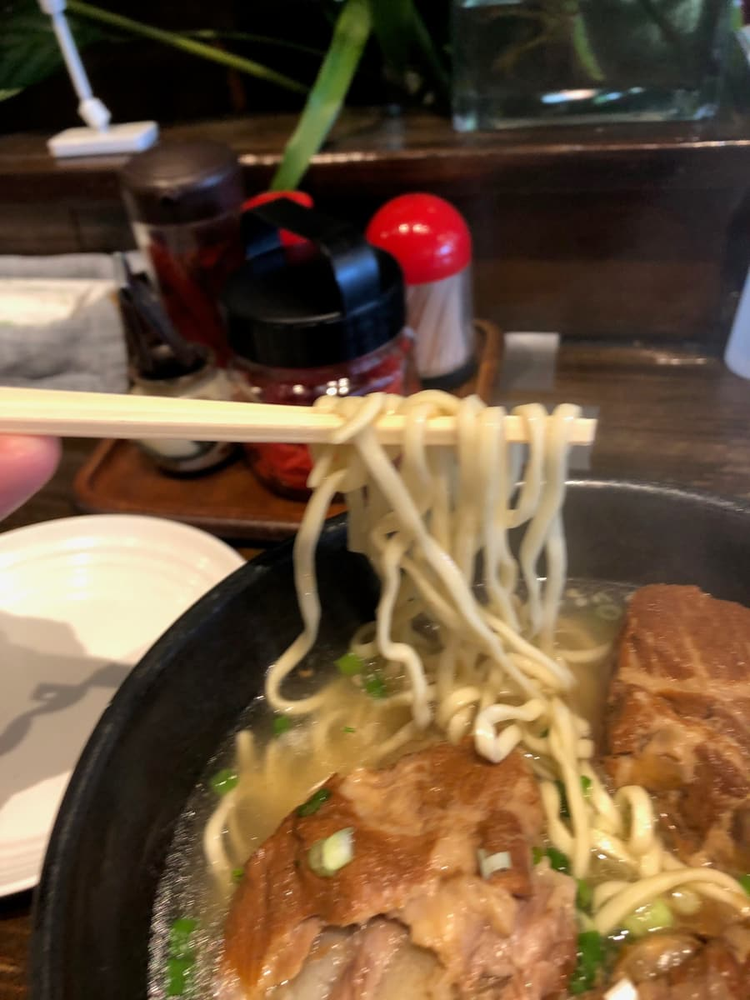

※이 글은 AI(Claude 3.5 sonnet)에게도 만들어 달라고 해서 일부를 제가 직접 덧붙여 업데이트했습니다ㅎㅎ
오키나와 소바 순례 여행, 이번에는 나하시 아케보노에 있는 “아자즈”를 소개할게요!😄 2024년 9월에 먹었습니다😄
나하시 아케보노에 있는 “아자즈”에 다녀왔어요. 위치는 국도 58호선 아자 교차로에서 항구 방면으로 향한 곳에 있습니다.
가게 외관이 정말 세련됐어요! 흰 벽에 “오키나와 소바 아자즈”라고 쓰인 간판이 눈길을 끕니다. 입구 주변에는 초록 식물이 잔뜩 있어서 남국 느낌이 가득하네요😊



부지 내 주차장에 들어가니 무려 주차장이 만차(^0^;)
점심때이긴 했지만 인기 가게라고 생각했습니다.
하지만 오키나와 소바니까 회전이 빠를 거라고 생각하고 잠시 부지 안에서 대기. 그러자 다 먹은 손님이 나와서 어떻게든 주차 완료.
그리고 가게 안에 들어가니 BGM으로 재즈가 흐르고 있어요. 이게 가게 이름의 유래일까요? “아자(安謝)”라는 지명과 “재즈”를 엮은 건지도. 왠지 다른 오키나와 소바 가게와는 한 끗 다른 분위기라, 조금 세련된 느낌이 들었습니다.
메뉴를 보면 정석인 오키나와 소바는 물론이고, 유시두부(오키나와 순두부) 소바나 주시(오키나와식 영양밥) 같은 것도 있습니다. 이번에는 정석을 공략해서 “소키 소바”를 주문했어요.

기다리는 동안 가게 안을 빙 둘러보니, 점심때라서 그런지 엄청 북적이고 있더라고요. 현지 분들도 많아서 인기 가게구나~ 하고 느꼈습니다.


자, 드디어 소키 소바의 등장입니다!🍜

먼저 국물부터. 음~, 이건 정석인 돼지뼈 베이스네요. 담백해서 마시기 편합니다. 평범하게 맛있지만, 특별히 두드러진 개성이 있는 건 아닐까.

다음으로 면을 후루룩 먹어 보니, 가는 스트레이트 면이고 꽤 부드럽습니다. 개인적으로는 조금 더 씹는 맛이 있어도 좋겠다고 생각했지만, 취향이 갈리는 부분일지도 모르겠네요.
고명인 소키를 보니, 큼직한 돼지갈비(소키)가 3개나 올라가 있다! 뼈 있는 돼지갈비(혼소키) 1개에 연골 돼지갈비(난코츠 소키) 2개라는 느낌입니다. 양념은 담백한 편이라 고기 자체의 맛을 즐길 수 있습니다. 다만 조금 힘줄 같은 부분도 있네요.
전체적으로 보면 “아자즈”의 소키 소바는 특별히 색다른 걸 하고 있지는 않지만, 안정감 있는 맛입니다.
다만 솔직히 점심때의 대성황을 보고 너무 기대했던 건지, 맛은 “음, 평범하게 맛있다” 정도였습니다. 특별히 감동! 이라는 건 아니더라고요😅
그래도 재즈가 흐르는 분위기 좋은 가게에서 먹는 오키나와 소바라니, 그것만으로도 조금 특별한 느낌이 들죠. 관광으로 나하에 온 분이 조금 세련된 분위기에서 오키나와 소바를 즐기고 싶다면 “아자즈”는 좋은 선택지가 되지 않을까요.
평가(9점/15점): 평범하게 맛있지만 특별히 두드러지는 건 없는, 그런 인상이네요. 여러분도 나하시 아케보노에 오셨을 때는 재즈가 흐르는 “아자즈”에서 조금 세련된 분위기 속에서 오키나와 소바를 즐겨 보시는 건 어떨까요?😊 자, 다음에는 어느 오키나와 소바 가게에 가 볼까나~. 오키나와 소바 순례 여행은 계속됩니다! 그럼 다음 편을 기대해 주세요~!👋
면: ★★★☆☆（3）
수프: ★★★☆☆（3）
토핑: ★★★☆☆（3）